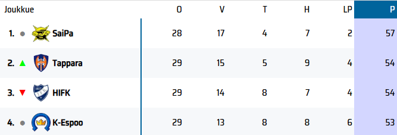

Tervetuloa Helsingin IFK:n fanisivulle
HIFK (Helsingin IFK) on yksi Suomen tunnetuimmista ja menestyneimmistä jääkiekkojoukkueista, perustettu vuonna 1897. Joukkue pelaa Liigassa, joka on Suomen korkein jääkiekkosarja. HIFK on voittanut useita Suomen mestaruuksia, tunnetuimpana viimeisin mestaruus vuonna 2011. Seura tunnetaan erityisesti kovasta fyysisestä pelityylistään ja suuresta fanikunnastaan. HIFK:n kotihalli on Helsingin Nordis (Helsingin jäähalli), jossa pelit keräävät usein täyden katsomon. Joukkueella on pitkä perinne laadukkaiden pelaajien kasvattajana ja se on ollut ponnahduslauta monille kansainvälisille jääkiekkoilijoille. HIFK:lla on myös vahva kilpailuhenki erityisesti paikallisvastustaja Jokereita ja muita Liigan huippujoukkueita vastaan.
Taidonnäyte

Sijoitukset 08.12.2024
Seurat
HIFK:lla on edustusjoukkue miesten sekä naisten jääkiekkoliigassa. Lisäksi HIFK:lla on kattava juniorijoukkueiden järjestelmä, joka sisältää kaikki ikäluokat nuorimmista junioreista A-nuoriin asti. Seurassa toimii myös harrastejoukkueita ja erikoisryhmiä jääkiekkoa harrastaville senioreille ja paraurheilijoille.